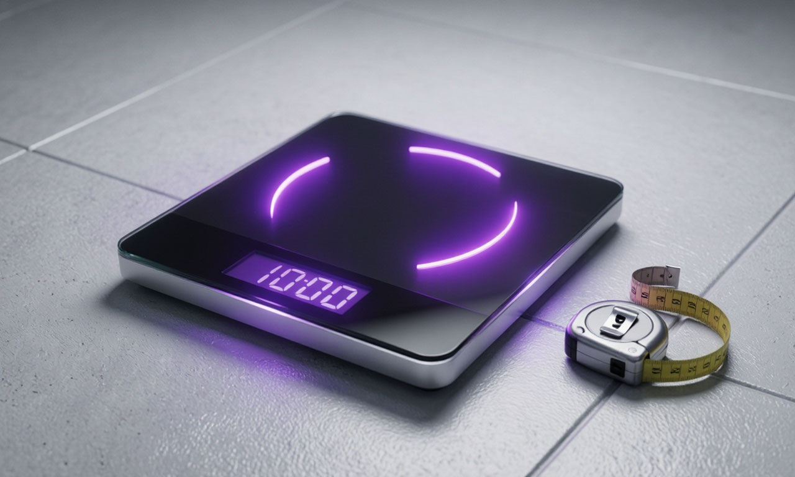
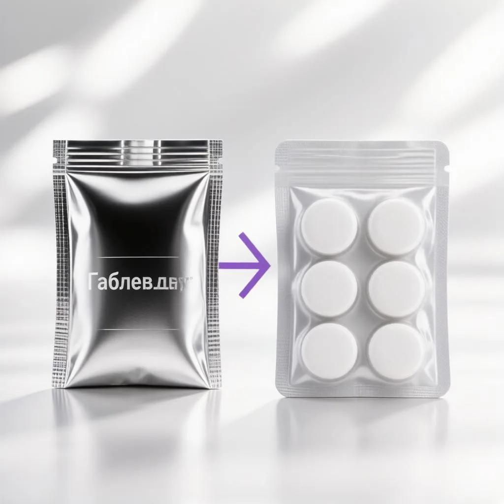
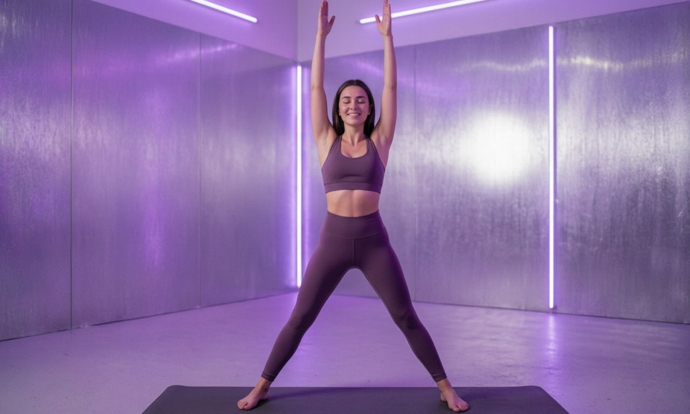

← На главную
📖 Блог ЗдоровьеНавигатора
Экспертные статьи о здоровье, питании и экономии на медицине.

Как рассчитать идеальный вес
Формулы, нормы ИМТ и поправки на возраст. Проверь себя!
Сколько воды пить в день
Разрушаем мифы. Точный расчет нормы для твоего веса.
Расшифровка анализов крови
Что значат отклонения простым языком. Гид по чекапу.
БЖУ для похудения без фанатизма
Как считать белки, жиры и углеводы и не сойти с ума.
Норма давления по возрасту
Таблица значений и когда бить тревогу. Трекер АД.
Как узнать размер будущей пенсии
Онлайн-расчет стажа и баллов. Планируй будущее.
Что должно быть в домашней аптечке
Полный список лекарств для дома, дачи и отпуска.
Калорийность алкоголя на диете
Можно ли пить и худеть? Расчет «цены» бокала.

Дешевые аналоги дорогих лекарств
Топ-10 замен, которые работают так же, но стоят копейки.

ЗОЖ без стресса: с чего начать
Маленькие шаги к большому здоровью. Без насилия над собой.
Первые признаки дефицита витаминов
Выпадение волос, усталость, ломкость ногтей. Чек-лист.
Как улучшить сон без таблеток
Гигиена сна, гаджеты и ритуалы для глубокого восстановления.